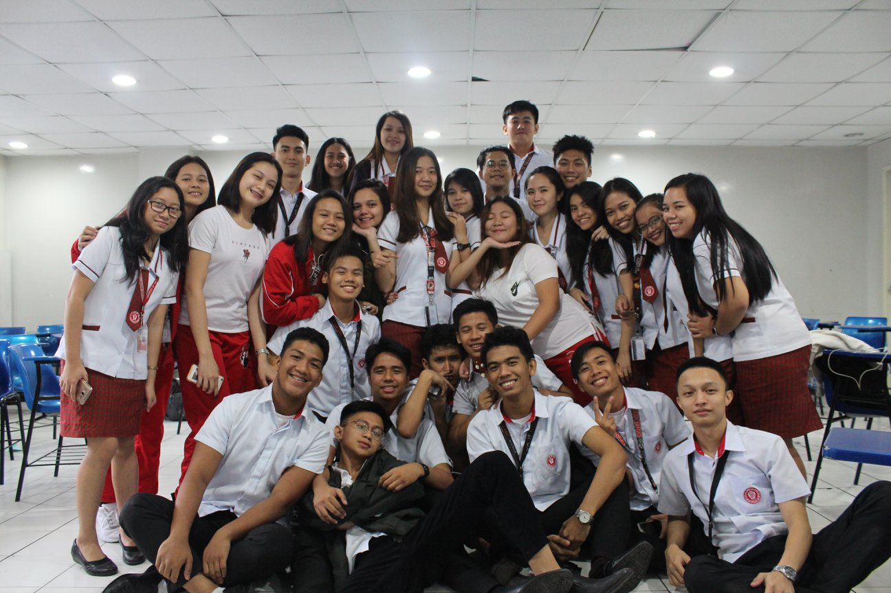
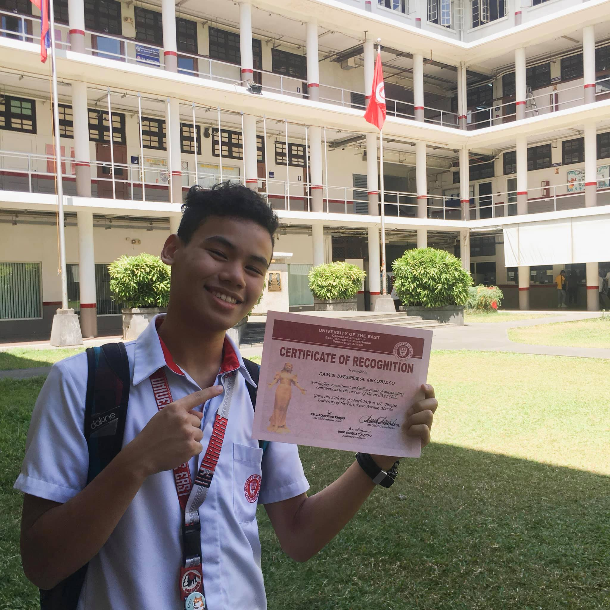

|  |
Hello, I'm Lance Diether M. Pelobillo.1 I'm 19 years old2 I was born at Manila and I'm living with my parents here at Santa Rosa Laguna.3 I'm a 2nd year college student and currently taking the course Information Technology here at the University of the East - Manila. 4I started studying here when I was at Senior High School,5 I remember that when I was grade 12 I'm a club president.6 My club name was UE ArtEast7 the club that I'm handling gained a lot of attention because of our outstanding performances we did.8 One of the projects that our club made is,9 when I was the one who's making our university pep squad props.10 |
|---|
|
We manage to do it on time even though we're lacking of time because doing those stuffs was really hard and it put us some pressure,11 becuase if we didn't manage to pull it off on time our pep squad won't have something to use at the competition.12 I am also the representative when UE have this competion where all the departments will design for christmas decoration and put it at our Tan Yan Kee garden.13 I'm representing the Basic Education and our competitorsthat time was College of Education, College of Computer Science System, and more.14 But still, we manage to pull it off and made it to the top.15 I also love to play Badminton.16 I am actually an athlete here at the university. 17 I've played and compete at one of the biggest sports associoation here in the Philippines (UAAP).18 My first apperance the UAAP was on 2020 UAAP Season 82. 19I also compete Internationally. 20 One of my best experience when I compete outside the country was held at Singapore 21 and I actually won the Tournament and became a Champion.22 |
 |
|---|
Go Back to homepage

PRESENTAt this page you'll know my current situtation,on how I handle current situation and more.
|
HOW IT STARTEDAt this page you'll know how things started on me. All the challenges I did and more.
|
EXPERIENCESAt this page you'll know my current situtation now that I'm a college student.
|
|---|